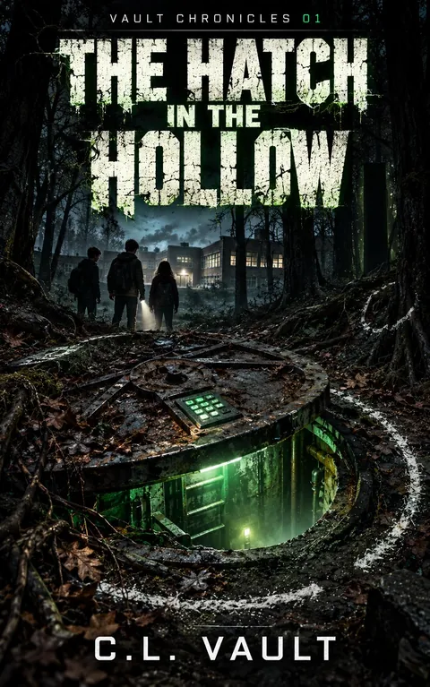
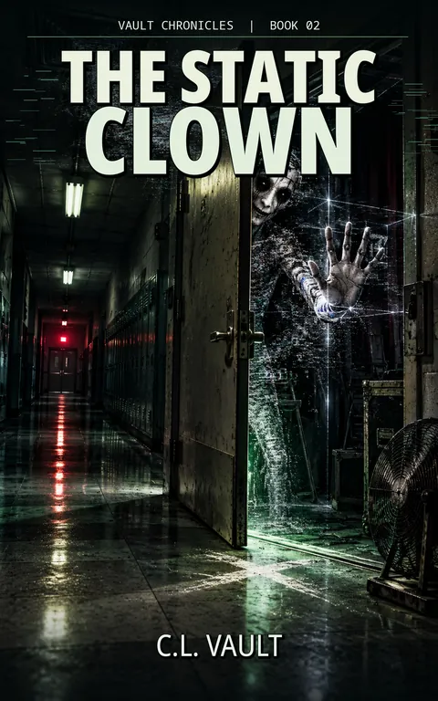

RECORDS IN FILING ORDER

FILE 01 / CL Vault
The Hatch in the Hollow
Detention, an empty closet, an impossible mark, and a hatch where no hatch should be.
Teen
Read archive entry →
FILE 02 / CL Vault
The Static Clown
A ghostly mime becomes the center of a mystery for kids who do not know what a mime is.
Teen
Read archive entry →
FILE 03 / CL Vault
The Siren in the Screen
After a voice says “good show,” Jace hears patient taps at his bedroom window and refuses to look.
Teen
Read archive entry →
FILE 04 / CL Vault
Station Zero
A recovered rule sheet warns the kids not to answer static, record the voice, or turn the device past null.
Teen
Read archive entry →RECOVERED TEXT / EXCERPT
Jace Moreno hated detention for the same reason he hated waiting rooms.
Nothing happened, and adults acted like that was good.
Excerpt from the series opening record. Additional material may be added when verified.